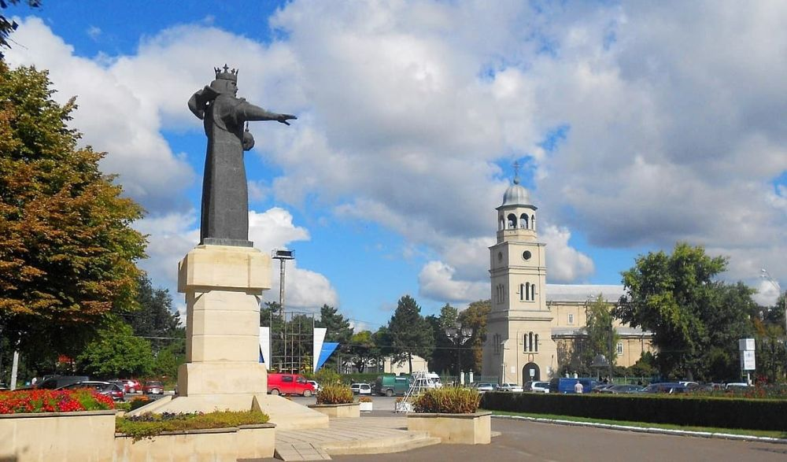

Descoperă Bălți - Orașul din nordul Republicii Moldova
Bălți este un oraș plin de diversitate și tradiții, situat în nordul Moldovei, oferind o atmosferă autentică:
-

Biserica Ștefan cel Mare - Loc de rugăciune
O biserică istorică cu arhitectură religioasă, purtând numele marelui voievod.
-

Parcul Ștefan cel Mare - Relaxare în aer liber
Un loc popular pentru plimbări și petrecerea timpului liber în mijlocul naturii.
-

Teatrul Vasile Alescandri - Artă și cultură
Un teatru cu tradiție, gazdă pentru spectacole de teatru și concerte.
-

Complexul Muzeal - Istorie și patrimoniu
O colecție variată de exponate care prezintă istoria și cultura orașului și regiunii.
-

Centrul orașului - Ambianță urbană
Străzi pline de viață, cafenele și magazine, oferind o privire în viața cotidiană din Bălți.
Concluzii
Bălți este un oraș care reflectă diversitatea culturală și istoria Republicii Moldova într-un mod unic.